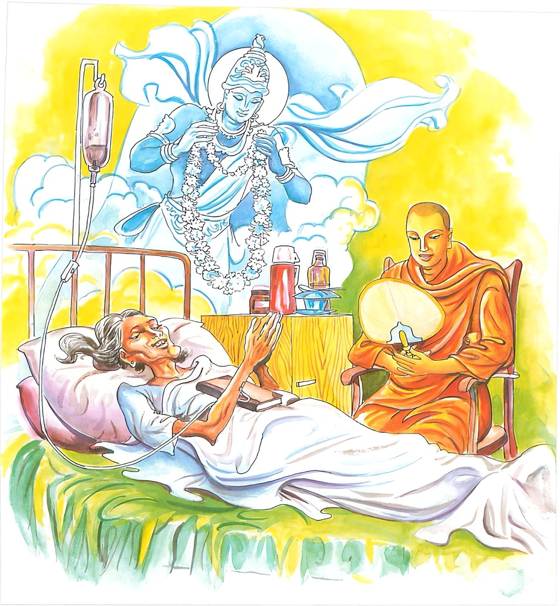

1-13 දහතුන්වන සුමනා දේවියගේ කථා වස්තුවයි.
මෙම කතාව සද්ධර්ම සාගරයෙන් ද කියවන්න.
ඉධ නන්දති පෙච්ච නන්දති කතපුඤ්ඤො උභයත්ථ නන්දති
පුඤ්ඤං මෙ කතන්ති නන්දති භිය්යො නන්දති සුග්ගතිං ගතො.
පින් කළ පුද්ගල තෙමේ මෙලොව දී (කර්මනන්දනයෙන්) තුටු වෙයි. පරලොව දී (විපාකනන්දනයෙන්) තුටු වෙයි. දෙලොව දී ම තුටු වෙයි. මාවිසින් පින් කරන ලදැයි මෙලොව දී තුටු වෙයි. සුගතියට ගියේ ඉෂ්ටවිපාකනන්දනයෙන් බෙහෙවින් තුටු වෙයි.

‘ඉධ නන්දති’ යනාදි මේ ධර්මදේශනාව බුදුරදුන් දෙව්රම වැඩවසන සමයෙහි සුමනාදේවිය අරභයා දෙසූසේක.
සැවැත්නුවර අනේපිඬුසිටුතුමාගේ ගෙදර දවස් පතා භික්ෂූහු දෙදහසක් දන් වළඳති. විශාඛා මහා උපාසිකාවගේ ගෙදරත් එසේය. සැවැත්නුවර යමෙක් දන්දෙනු කැමැත්තේ නම් ඒ අය ඒ දෙදෙනාගේ අවසරය ලබාගෙනම දන් දෙති. කුමක් නිසාද? ඔබගේ අග්රදානයට අත්පිඬුසිටුතුමා හෝ විශාඛා මහා උපාසිකාව හෝ ආවෙහිදැයි විචාළවිට නොආවාහුයයි කීවොත් ලක්ෂයක් වියදම් කොට පිළියෙළ කළ දානයක් වුවද ඒ දානය කුමක්දැයි මිනිස්සු අවමානයෙන් කථාකරති. අනේපිඬු විශාඛා දෙදෙනම භික්ෂූන්ගේ රුචියත්, සුදුසු වැඩකටයුතුත් හොඳින් දනිත්, ඔවුන් විචාරා දානය පිළියෙළ කළ විට භික්ෂූහු සිත්සේ වළඳත්, එහෙයින් දන්දෙනු කැමැත්තෝ ඔවුන් ගෙන්වාගෙනම දන්දෙති. මේ හේතුවෙන් තම තමන්ගේ ගෙවල්වලදී භික්ෂුන් වැළඳවීමට බොහෝ අයට අවකාශ නොලැබේ. ඉක්බිති විශාඛාවෝ මගේ ස්ථානයේ සිට (මා මෙන්) භික්ෂු සංඝයා වැළඳවීමට සුදුසුදැයි සොයා බලන්නාහු තම පුතාගේ දුවණිය ඊට සුදුසු බව දැක ඈ තමන්ගේ තැන තැබුවෝය.
ඒ දුවණිතොමෝ ඒ විශාඛා උවැසියගේ නිවසෙහි භික්ෂූන් වළඳවයි. අනේපිඬු සිටුතෙමේත් මහාසුභද්රානම් දෙටුදුවණිය සිය තනතුරෙහි තැබීය. ඕතොමෝ භික්ෂූන්ගේ වතාවත් කරන්නී, බණ අසන්න සෝවාන්ව පතිකුලයකට ගියාය. අනතුරුව චූලසුභද්රාව එකී තනතුරෙහි තැබීය. ඕතොමෝත් එසේම කටයුතු කොට සෝවාන්ව පතිකුලයකට ගියාය. ඉන්පසු සුමනාදේවී නම් කනිටු දුවණියෝ ඒ තනතුරෙහි තැබූහ. ඕතොමෝ සකෘදාගාමීව කුමරියක ලෙසම සිටියාය. නැවත ඕතොමෝ ආහාරඅරුචියෙන් රෝගාතුරව පියා දකිනු කැමතිව පියා තමා ළඟට කැඳෙව්වාය. අනේපිඬුසිටුතෙමේ දන්ගෙදරකදීම ඇගේ පණිවුඩ ලියුම අසා වහාම එහි ගොස්, දුව සුමනාවනි, මේ කිමෙක්දැයි ඇසීය.
ඕතොමෝ ඒ සිටාණන්ගෙන් බාල සොහොයුර ඇයිදැයි ඇසුවාය. දුවණියනි. නන්දොඩවන්නෙහිද? බාල සොහොයුර, මම නන්නොදඩමි. දුවණිය ඔබ භයවූයෙහිද? බාල සොහොයුර, මම බය නොවූයෙමියි මෙපමණක්ම කියා මිය පරලොව ගියාය.
සිටුතෙමේත් සෝවාන් වූයේ නමුදු සිටුදුවගේ වියෝවෙන් උපන් ශෝකය ඉවසාගත නොහැකිව දූගේ සිරුර පිළිබඳ අවසන්කටයුතු කරවා අඬමින් බුදුන් සමීපයට ගියේය. බුදුරජාණන්වහන්සේ, ගෘහපතිය, කුමක් නිසා දුක්වී, දොම්නසින්, කඳුළු පිරි ඇසින් යුක්තව හඬමින් ආවෙහිදැයි ඇසූහ.
ස්වාමීනි, මගේ දුව සුමනාදේවී කළුරිය කළායයි කීවේය. ඉතින් කුමක් නිසා ශෝක කරන්නෙහිද? මරණය ඒකාන්ත නොවේද? ස්වාමීනි. මම එය දනිමි. එහෙත් මගේ මේ විලිලජ්ජා දෙකෙන් පිරිපුන් දුවණියෝ මරණාසන්න මොහොතෙහි සිහිය එළවාගන්නට නොහැකිව නන්දොඩවමින් මළාහ. එයින් මට බොහෝ දුක්දොම්නස් උපදී. මහසිටාණනි, ඈ කුමක් කීවෙහිද? ස්වාමීනි, මම දුව සුමනායයි ඈ ඇමතීමි. ඈ බාලමලණුවනියි මගෙන් ඇසුවාය. මම යළිත් දුව සුමනායයි ඈට කථාකෙළෙමි. ඔබ නන්දොඩවන්නෙහිදැයි මම ඇසුවෙමි. බාල සහෝදරය, මම නන්දොඩවන්නේ නැතැයි ඈ කීවාය. දුව ඔබ බිය වූයෙහිදැයි ඇසීමි. කනිටු සොහොයුරාණනි, මම බිය නොවෙමියි මෙපමණක්ම කියා ඈ කළුරිය කළාය.
ඉක්බිති භාග්යවතුන්වහසේ සිටාණනි, ඔබේ දුව නන්දොඩවන්නේ නැතැයි වදාළහ. එසේ නම් කුමක් හෙයින් මට එසේ කීවාද? කනිටු බැවින්මය ගෘහපතිය. ඔබේ දුව වනාහි මගඵලවලින් ඔබට වඩා මහලුය. ඔබ සෝතාපන්නයෙකි. ඔබේ දුව සකෘදාගාමීය. ඕ මාර්ගඵලවලින් මහලු බැවින් මෙසේ කීවායයි වදාළහ. ස්වාමීනි, එය එසේද? එය ගෘහපතිය. ස්වාමීනි, දැන් ඈ කොහි උපන්නීද? තුසිත භවනෙහියයි වදාළ කල්හි ස්වාමීනි, මගේ දුව මෙහි නෑදයන් අතර ප්රීතිවෙමින් සිට මෙයින් පිටත්වී ගොසිනිදු සතුටුවන තැනකම උපන්නී නේදැයි කීය. ඉක්බිති තථාගතයන් වහන්සේ ඔහුට එසේය ගෘහපතියයයි වදාරා, ගෘහපතිය, පැවිදි හෝ ගිහි හෝ වේවා නොපමාවූවාහු නම් මෙලොවත් පරලොවත් සතුටුවෙත්මයයි වදාරා මේ ගාථාවද ප්රකාශ කළහ:
කළ පින් ඇත්තා මොලොව සතුටු වෙයි
කළ පින් ඇත්තා එලොව සතුටු වෙයි
මම පින් කෙළෙමියි බොහෝ සතුටු වෙයි
සුගතියෙ ගොස් තව තවත් සතුටු වෙයි
ඒ ගාථාවෙහි ඉධ යනු මේ ලෝකයෙහි යන අරුත්ය. පින්කම් කිරීමෙන් වන සතුටින් සතුටුවෙයි. පෙච්ච යනු පරලොව විපාක නන්දනයෙන් (අනුභවයෙන්) සතුටු වෙයි. කතපුඤ්ඤො යනු නානාප්රකාර පින්කරන තැනැත්තායි. උභයත්ථ යනු මෙලොව මා විසින් කුසල් කරනලදි. පවු නොකරනලදැයි සතුටු වෙයි. පරලොව එහි විපාක අනුභව කරන කල්හිත් සතුටු වෙයි. පුඤ්ඤං මෙඉති පුඤ්ඤංමෙ යනු මොලොව සතුටුවන තැනැත්තේ සොම්නස් මාත්රයෙන් පවා කර්ම ප්රීතිය නිසා සතුටු වෙයි. භිය්යොඉති භිය්යො යනු විපාක (වින්දන) නන්දනයෙන් සුගතියට ගියේ සත්පනස්කෙළක් හවුරුදුද, අවුරුදු හැටලක්ෂයක්ද දිව්යමයවූ සැප වළදමින් තුසීපුරෙහි අතිශයින් සතුටුවන්නේයයි වදාළසේක.
ගාථා කෙළවර බොහෝ දෙනා සෝවාන් ආදි මාර්ගඵලවලට පැමිණියාහුය. ධර්මදේශනාව මහජනයාට සාර්ථක විය.